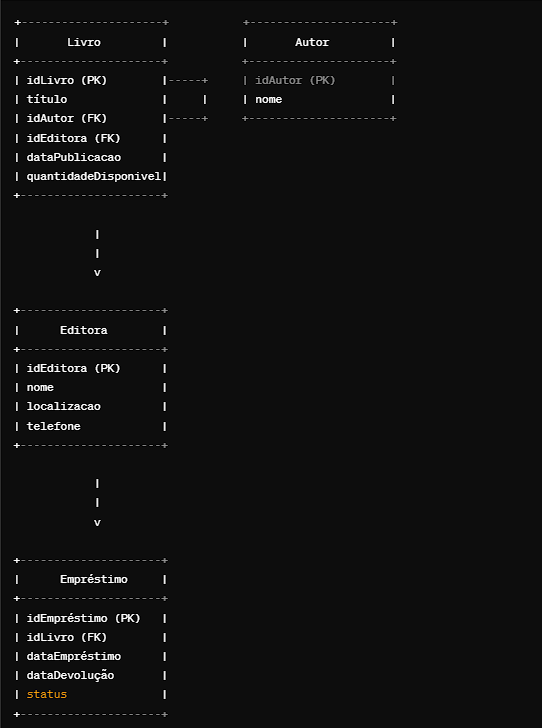
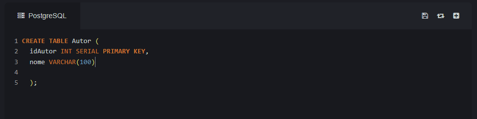
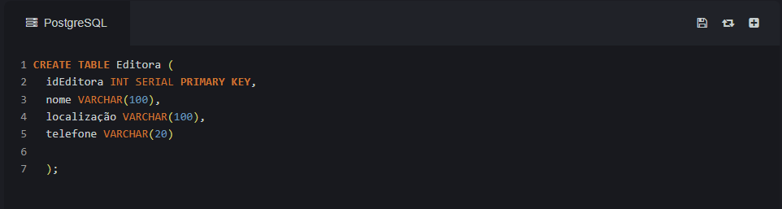
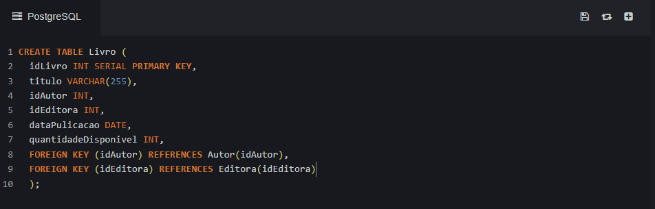
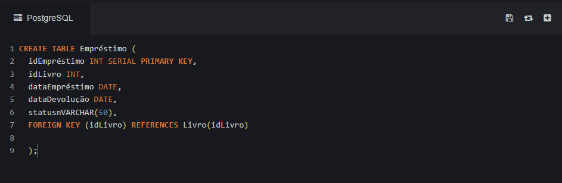
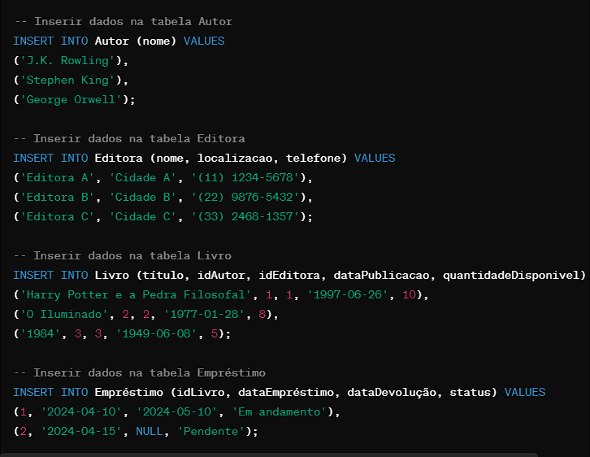
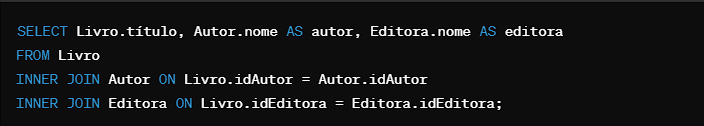
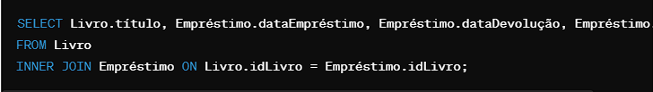

Diagrama das tabelas

• Cada entidade é representada por um retângulo, onde o nome da entidade está no topo. • Os atributos de cada entidade são listados dentro do retângulo, com a chave primária (PK) em negrito. • As linhas conectando as entidades representam os relacionamentos entre elas. Por exemplo, um livro está relacionado a um autor através do campo idAutor. • Os relacionamentos são indicados pelas chaves estrangeiras (FK) em uma entidade que referenciam a chave primária em outra entidade.
Tabela Autor: • idAutor (Chave Primária) • nome
Tabela Editora: • idEditora (Chave Primária) • nome • localizacao • telefone
Tabela Livro: • idLivro (Chave Primária) • título • idAutor (Chave Estrangeira referenciando Autor) • idEditora (Chave Estrangeira referenciando Editora) • dataPublicacao • quantidadeDisponivel
Tabela Empréstimo: • idEmpréstimo (Chave Primária) • idLivro (Chave Estrangeira referenciando Livro) • dataEmpréstimo • dataDevolução • status
Teste na Tabela: Dados de teste nas tabelas que criamos anteriormente para simular um ambiente básico de um sistema de gerenciamento de biblioteca. Vou adicionar alguns autores, editoras, livros e alguns registros de empréstimo.
Comando para Listar todos os livros com seus respectivos autores e editoras:
Listar os livros emprestados e seus dados de empréstimo:
Listar todos os autores e a quantidade de livros que cada um escreveu: